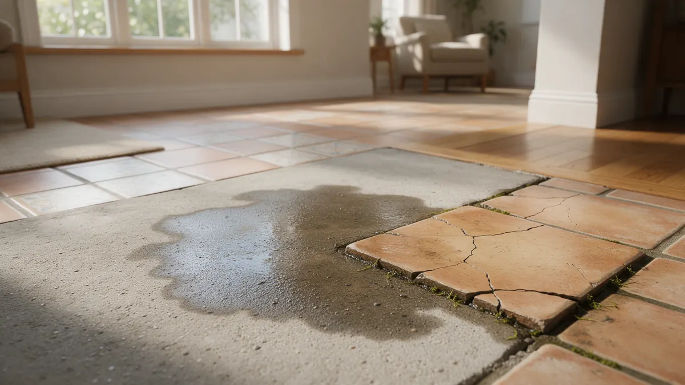

Suspect a Slab Leak? A Colorado Homeowner Handbook

A slab leak is a break in a pipe running in or beneath a concrete foundation, so you cannot see it. This handbook covers the clues that give it away, what to do in the first hours, and the choices a plumber typically explains. Plumbing Pros Colorado connects you with independent local plumbers who diagnose these leaks across the Front Range and beyond.
Clues that point to the slab
Look for a floor that feels warm underfoot, a sudden water bill change, the sound of running water when everything is off, damp carpet, cracked tile or baseboards that look swollen. Low pressure at faucets can also appear.
- Warm spot on the floor
- Meter running with fixtures off
- Hissing in a quiet house
- Wet carpet with no source
- Cracked tile or grout
What to do before anyone arrives
Confirm the meter test, then shut off the main valve. If the leak is on a hot line, the water heater may also need its supply closed. Move belongings away from damp floors and take photos.
Avoid drilling or breaking the floor yourself. The slab may hold radiant heat tubing, electrical conduit or post-tension cables, and cutting blindly can create a bigger problem.
Write down which fixtures run hot first and whether the sound is loudest near the water heater or the front of the house. Those observations help the plumber decide where to begin listening.
How plumbers find a leak you cannot see
A plumber may isolate hot and cold lines with pressure tests, then use acoustic listening devices on the floor to pinpoint the spot. Thermal cameras and tracer gas can also help.
The goal is to mark the leak within a small area so any opening in the floor is limited.
Keep a simple log for the plumber: when you saw the first sign, whether hot or cold water seems affected, and whether the noise changes at night. Those small details often speed up the search.
Repair routes and how they differ
Common paths include opening the slab above the break and patching the pipe, rerouting the line through walls or the attic, or replacing the affected supply with new pipe. Each path trades off floor disruption, time and long-term reliability.
If pipe elsewhere is in poor shape, the plumber may discuss wider repiping. Ask how drywall, flooring and sealing of the slab will be handled afterwards.
Why Colorado slabs are at risk
Expansive clay and bentonite soil swells when wet and shrinks when dry, shifting foundations enough to stress copper lines beneath them. Newer subdivisions in areas such as Aurora, Parker and Castle Rock often sit on these soils.
Mineral-heavy water can wear copper from inside. As a referral line, we do not perform the repair; the independent plumber you are connected with does.
Slab leaks and your utility bill
A slab leak often shows up as a jump in water use before any visible damage appears. Compare the current bill to the same month last year, and remember that watering season can explain part of a summer rise.
If your utility offers online usage data, look for steady flow overnight, when nobody is using water. Constant overnight consumption is a strong clue and worth reporting to the plumber when you call.
Hot water leaks can also push gas or electric heating use up, since the water heater keeps running to replace what escapes.
Frequently asked questions
Can a slab leak damage the foundation?
Constant moisture can soften the soil under a slab and, in expansive clay areas, contribute to movement. Prompt shutoff and repair limit that risk. A plumber can tell you whether a structural professional should take a look.
Is a warm floor always a slab leak?
Radiant heat, sun through windows and ducts under the slab can warm a floor. A warm spot paired with high water use or a running meter points more strongly toward a hot water line leak.
Does homeowners insurance cover slab leaks?
Policies differ, and many treat the pipe repair and resulting damage separately. Contact your insurer early, share photos and the plumber's findings, and ask what your policy says about access and cleanup.
Can PEX or copper both leak under a slab?
Yes. Copper can pit from water chemistry or abrasion, and PEX can fail at fittings or from physical damage. The plumber identifies the material and can explain why the line failed.
Will I need to move out during repair?
Often not, though dust, noise and a closed water supply make some homes hard to use for a few days. Ask the plumber about the scope of work and whether your household needs temporary arrangements.
What is the difference between a slab leak and a drain leak?
A slab leak involves pressurized supply lines carrying water to fixtures. A drain leak sits on the waste side and only leaks when water flows down it. Supply leaks run constantly, which is why the meter keeps moving.
Related plumbing services
Slab Leak Repair by city
- Water leak repair in Loveland
- Water leak repair in Fort Collins
- Water leak repair in Dillon
- Water leak repair in Fountain
- Water leak repair in Pueblo
- Water leak repair in Castle Rock
Ready to talk to someone? Call (720) 794-0974 or visit find a plumber for a suspected slab leak.